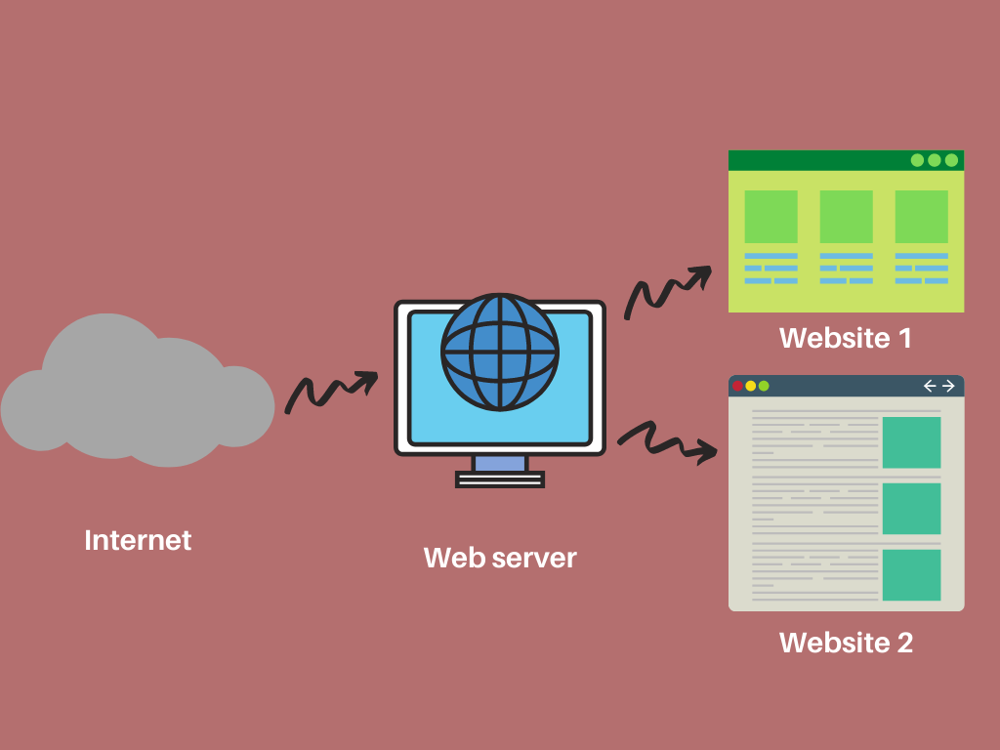

Что такое интернет и как он работает
Интернет — это глобальная сеть, которая объединяет устройства по всему миру и
дает пользователям множество возможностей: работать, учиться, вести бизнес и так далее. В наши дни от
работоспособности интернета зависят буквально все процессы жизнедеятельности.
Компьютерные сети — это сложные объекты, которые различаются по размеру, доступности и применяемым
технологиям. Внутридомовая сеть с точки зрения размера, структуры, оборудования и функциональности сильно
отличается от той, которая соединяет два города. Такое разнообразие сетей затрудняет их совместную работу.
Однако решение кроется в интерсетях или интернете.
Межсетевые соединения — это тип сети, который соединяет несколько сетей и нивелирует их различия, чтобы они
могли взаимодействовать как совместимые.
Главная общедоступная сеть называется интернетом. Любой может получить доступ к интернету с помощью устройства
— компьютера, телефона, планшета и так далее — для обмена информацией и совместного использования ресурсов.
Интернет работает посредством передачи данных между серверами и клиентами. Серверы - это мощные
компьютеры, которые хранят и обрабатывают информацию, а клиенты - это устройства, такие как компьютеры,
смартфоны или планшеты, которые подключаются к интернету для получения этой информации. Чтобы подключиться к
интернету, необходимо с помощью провайдера услуг доступа к интернету установить соединение. Это может быть
проводное соединение, такое как Ethernet или оптическое волокно, или беспроводное соединение через Wi-Fi,
мобильные сети или спутниковые связи. После установления соединения вы можете использовать интернет для поиска
информации с помощью поисковых систем, чтения новостей, просмотра видео на YouTube, общения в социальных
сетях, отправки электронной почты, покупок онлайн и многого другого. Интернет также является основой для
различных сервисов, таких как онлайн-банкинг, облачное хранение данных, потоковое вещание и т. д. Важно
отметить, что интернет предоставляет множество возможностей, но также требует осмотрительного и безопасного
использования. Важно соблюдать правила конфиденциальности, осторожно относиться к собственной личной
информации и обеспечивать безопасность своих устройств при использовании интернета.
Сайты и их структура

После того, как мы общих чертах разобрались с тем, что такое интернет и как он работает, мы можем перейти к
сайтам. Сайт - это веб-страницы, объединенные вместе и доступные через
интернет. Он содержит информацию, которую можно просмотреть с помощью браузера на устройстве, подключенном к
интернету.
Теперь посложнее, поговорим о структуре сайта.
Краткое описание структуры сайта:
-
1. Домашняя страница: это главная страница сайта, на которой обычно содержится общая информация о
компании
или о теме сайта.
-
2. Навигационная панель: это меню или список ссылок, которые помогают пользователям перемещаться по
сайту и
найти нужную информацию.
-
3. Разделы или страницы: сайт может содержать различные разделы или страницы, каждая из которых
посвящена
определенной тематике или информации. Например, "О нас", "Услуги", "Контакты" и т.д.
-
4. Мультимедийный контент: сайт может включать изображения, видео, аудио или другие мультимедийные
элементы, которые помогают представить информацию более наглядно и привлекательно.
-
5. Футер или подвал: это раздел внизу страницы, который обычно содержит дополнительную информацию о
сайте,
ссылки на социальные сети, контактные данные и другую вспомогательную информацию.
-
6. Другие функциональные элементы: в зависимости от типа сайта, он может включать дополнительные
функциональные элементы, такие как формы обратной связи, корзины покупок в интернет-магазине,
комментарии
пользователей и т.д.
Как работают сайты?
-
1. Пользователь вводит адрес сайта в браузер.
-
2. Браузер отправляет запрос на сервер, указывая адрес сайта.
-
3. Сервер получает запрос и ищет соответствующие файлы и данные, связанные с сайтом.
-
4. Сервер отправляет браузеру запрошенные файлы и данные.
-
5. Браузер получает файлы и данные и отображает их на экране пользователя.
-
6. Пользователь взаимодействует с сайтом, кликая на ссылки, заполняя формы или выполняя другие
действия.
-
7. При необходимости браузер отправляет дополнительные запросы на сервер для получения
дополнительной информации или выполнения определенных действий.
-
8. Сервер обрабатывает запросы, взаимодействует с базами данных или другими компонентами и
возвращает результаты обратно в браузер.
-
9. Процесс взаимодействия между браузером и сервером продолжается, пока пользователь не покинет сайт
или не выполнится необходимое действие.
-
10 .Весь этот процесс происходит в реальном времени, что позволяет пользователям просматривать,
взаимодействовать и получать информацию на сайте.
-
1. Домашняя страница: это главная страница сайта, на которой обычно содержится общая информация о компании или о теме сайта.
-
2. Навигационная панель: это меню или список ссылок, которые помогают пользователям перемещаться по сайту и найти нужную информацию.
-
3. Разделы или страницы: сайт может содержать различные разделы или страницы, каждая из которых посвящена определенной тематике или информации. Например, "О нас", "Услуги", "Контакты" и т.д.
-
4. Мультимедийный контент: сайт может включать изображения, видео, аудио или другие мультимедийные элементы, которые помогают представить информацию более наглядно и привлекательно.
-
5. Футер или подвал: это раздел внизу страницы, который обычно содержит дополнительную информацию о сайте, ссылки на социальные сети, контактные данные и другую вспомогательную информацию.
-
6. Другие функциональные элементы: в зависимости от типа сайта, он может включать дополнительные функциональные элементы, такие как формы обратной связи, корзины покупок в интернет-магазине, комментарии пользователей и т.д.
-
1. Пользователь вводит адрес сайта в браузер.
-
2. Браузер отправляет запрос на сервер, указывая адрес сайта.
-
3. Сервер получает запрос и ищет соответствующие файлы и данные, связанные с сайтом.
-
4. Сервер отправляет браузеру запрошенные файлы и данные.
-
5. Браузер получает файлы и данные и отображает их на экране пользователя.
-
6. Пользователь взаимодействует с сайтом, кликая на ссылки, заполняя формы или выполняя другие действия.
-
7. При необходимости браузер отправляет дополнительные запросы на сервер для получения дополнительной информации или выполнения определенных действий.
-
8. Сервер обрабатывает запросы, взаимодействует с базами данных или другими компонентами и возвращает результаты обратно в браузер.
-
9. Процесс взаимодействия между браузером и сервером продолжается, пока пользователь не покинет сайт или не выполнится необходимое действие.
-
10 .Весь этот процесс происходит в реальном времени, что позволяет пользователям просматривать, взаимодействовать и получать информацию на сайте.
Как создаются сайты

Создание веб-сайтов включает несколько основных этапов:
-
1. Планирование: Определение целей, аудитории и функциональности сайта. Создание структуры и
макетов.
-
2. Дизайн: Разработка визуального оформления, выбор цветовой палитры, шрифтов, изображений и
интерфейсных элементов.
-
3. Верстка: Преобразование дизайн-макетов в веб-код (HTML, CSS) для создания структуры и внешнего
вида сайта.
-
4. Разработка: Написание программного кода (обычно на языке JavaScript) для добавления
интерактивности и функциональности сайта, таких как анимации, формы обратной связи и другие элементы.
-
5. Тестирование и отладка: Проверка сайта на различных устройствах и браузерах, исправление ошибок и
неполадок.
-
6. Размещение: Подбор хостинга и доменного имени для размещения сайта в Интернете.
-
7. Оптимизация и продвижение: Улучшение производительности сайта, оптимизация для поисковых систем
(SEO) и использование маркетинговых стратегий для повышения видимости.
1. Планирование: Определение целей, аудитории и функциональности сайта. Создание структуры и макетов.
2. Дизайн: Разработка визуального оформления, выбор цветовой палитры, шрифтов, изображений и интерфейсных элементов.
3. Верстка: Преобразование дизайн-макетов в веб-код (HTML, CSS) для создания структуры и внешнего вида сайта.
4. Разработка: Написание программного кода (обычно на языке JavaScript) для добавления интерактивности и функциональности сайта, таких как анимации, формы обратной связи и другие элементы.
5. Тестирование и отладка: Проверка сайта на различных устройствах и браузерах, исправление ошибок и неполадок.
6. Размещение: Подбор хостинга и доменного имени для размещения сайта в Интернете.
7. Оптимизация и продвижение: Улучшение производительности сайта, оптимизация для поисковых систем (SEO) и использование маркетинговых стратегий для повышения видимости.
Основные технологии frontend-разработчика
HTML
HTML (от английского HyperText Markup Language) — это язык гипертекстовой разметки текста. Он нужен, чтобы размещать на веб-странице элементы: текст, картинки, таблицы и видео
CSS
CSS («каскадные таблицы стилей», от англ. Cascading Style Sheets) — это язык, используемый для стилизации страниц. Он определяет то, как HTML-элементы будут выглядеть на веб-странице с точки зрения дизайна
JavaScript
JavaScript (JS) — один из самых популярных сценарных языков. С его помощью сайты делают интерактивными: добавляют всплывающие окна, анимацию, кнопки лайков и формы для отправки информации и другие динамичные ообъекты
HTML, CSS, и JavaScript - основные технологии для веб-разработки, но frontend не заканчивается только на них. В более сложных проектах используют PHP, TypeScript и т.д. Также в качестве дополнительных инструментов frontend-разработчика выступают фреймворки. Фреймворк (англ. framework — «каркас, структура») — готовый набор инструментов, который помогает разработчику быстро создать продукт: сайт, приложение, интернет-магазин, CMS-систему. Среди самых известных: React, Vue.js, Ember, Bootstrap и Angular.
В основе фреймворков лежат важные компоненты:
-
работа с базами данных
-
использование файловой системы
-
обработка багов
-
защита информации
-
вывод графических элементов